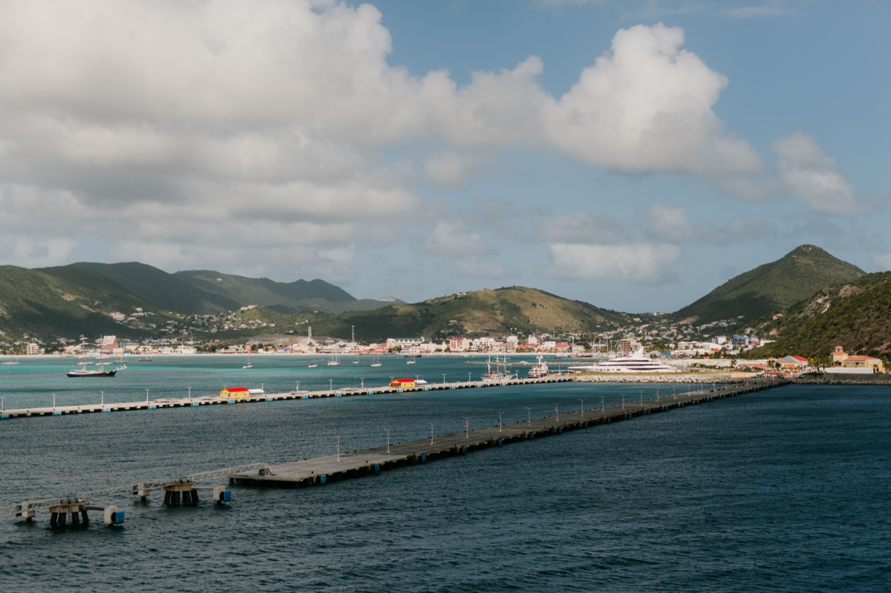

Moving to Sint Maarten / St-Martin in 2026
The only island split between two nations — a Dutch south and a French north — and the tax difference between them is enormous. Here's the Dutch 10% Penshonado program, the residency routes, and the real cost.

Sint Maarten / Saint-Martin is a genuine curiosity: one small 87-km² island shared by two countries — the Dutch south (Sint Maarten, part of the Kingdom of the Netherlands) and the French north (Saint-Martin, part of France and the EU). The border is open and English is spoken everywhere, but each side runs its own immigration and — crucially — its own tax system. For most relocating expats and retirees, that tax gap makes the Dutch side the clear choice.
The big decision: Dutch side vs French side
This is the single most important call, and it's mostly about tax. The Dutch side has no property, capital-gains, or inheritance tax and a moderate income tax — and offers the Penshonado program below. The French side runs on French tax law: income tax up to 45% plus ~17.2% social charges, a wealth tax on property above €1.3M, and EU VAT. Same beaches, very different tax bill. A residence permit on one side does not grant rights on the other.
The Penshonado program (Dutch side, for retirees)
The headline draw: a legal, government-sanctioned flat 10% tax on worldwide income for qualifying retirees.
- Eligibility: aged 50+, lived abroad the prior 60 months, become a genuine resident, and register with the tax authority within two months.
- Property: buy a home worth at least ANG 450,000 (~US$250,000) — required by renewal.
Residency routes (Dutch side)
Unlike much of the Caribbean, Sint Maarten doesn't require bond/fund investments — it looks at income, property, and presence:
- AVVR (financially independent): stable income of ≥ANG 150,000/year plus qualifying property; renewable 1–3 years.
- Investor: the same ~US$250,000 real-estate minimum, any age.
- Managing Director: establish a local company (US citizens benefit from the Dutch-American Friendship Treaty). Permanent residence after 5 years.
Most Western nationals enter visa-free for 90 days (in any 180) to scout — but that doesn't establish residency.
Cost of living — high
One of the pricier Caribbean bases: roughly $3,000–$4,500/month for a single expat, driven by rent (a one-bedroom runs $900–$1,400) and imports. Cars carry steep import duties.
Healthcare
Both sides have hospitals (the St. Maarten Medical Center on the Dutch side; a full French hospital on the north), but complex care means travel to Puerto Rico, Miami, or the Netherlands/Martinique — so carry private international insurance ($300–$600/month) with evacuation cover.
Where expats actually live
Secure, established communities include Cupecoy, Simpson Bay, and Indigo Bay on the Dutch side; the French side is generally quieter. The island is tiny — 20 minutes end to end — and just 3–4 hours from major US cities by direct flight.
Is Sint Maarten right for you?
- Great fit if: you're a retiree who can use the Dutch-side 10% Penshonado, or a business owner wanting a US-dollar, English-speaking base close to the US.
- Think twice if: you'd end up a French-side tax resident on high income, or you need budget costs — this island is expensive.
Relocating is step one. Owning the home is step two.
SORA designs and builds homes across the tropics — with our deepest roots in Panama and Costa Rica, where residency is straightforward and building costs a fraction of the coastal Caribbean. If your move is really about a place of your own in the sun, it is worth seeing what a fixed-price build looks like before you commit to any one island.
Frequently asked questions
Should I move to the Dutch or French side of St Martin?
For most expats and retirees seeking tax efficiency, the Dutch side (Sint Maarten) is the clear choice — no property, capital-gains, or inheritance tax, plus the 10% Penshonado program. The French side (Saint-Martin) runs on French tax law with income tax up to 45% plus social charges and a wealth tax. The border is open, but a residence permit on one side doesn't grant rights on the other.
What is the Sint Maarten Penshonado program?
A Dutch-side retiree program that taxes worldwide income at a flat 10%. You must be 50+, have lived abroad for the prior 60 months, become a genuine resident, register with the tax authority within two months, and buy a home worth at least ANG 450,000 (about US$250,000) by renewal.
How do you get residency in Sint Maarten?
Common routes are the AVVR for the financially independent (income of at least ANG 150,000/year plus qualifying property), an investor route (~US$250,000 in real estate, any age), or the Managing Director route by establishing a local company. Permanent residence follows five years of lawful residence.
How much does it cost to live in Sint Maarten?
It's one of the pricier Caribbean destinations — roughly $3,000–$4,500/month for a single expat, driven by high rents (a one-bedroom is $900–$1,400) and imported goods. Cars carry steep import duties.
Sources & verification
Figures in this guide were checked against primary and authoritative sources on 27 July 2026. Immigration, tax, and cost figures change — always confirm the current rules with the official body or a licensed professional before acting.
- Government of Sint Maarten (immigration) — official Dutch-side residency & Penshonado
- Préfecture de Saint-Martin (France) — official French-side administration
- US State Department — Sint Maarten — travel advisory (Level 1)